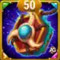
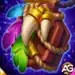
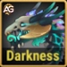

Guia do Herói Cascade – para Hero Wars Alliance
Guia do Herói Cascade – para Hero Wars Alliance
 Guia do Herói Guus – Curandeiro do Caminho da Honra para Hero Wars Alliance
Guia do Herói Guus – Curandeiro do Caminho da Honra para Hero Wars Alliance
 Guia de Isaac no Hero Wars Mobile
Guia de Isaac no Hero Wars Mobile
 Guia da Kayla em Hero Wars Alliance: Melhores Times e Builds
Guia da Kayla em Hero Wars Alliance: Melhores Times e Builds
Antes conhecido como o destemido berserker do Caminho da Natureza, Jhu retornou com uma fúria renovada! Sua tão aguardada reformulação o transforma em uma potência capaz de dominar tanto as batalhas PvE quanto as competitivas. Isso não é apenas uma pequena atualização — é o renascimento de uma lenda.
Com sua nova Relíquia amplificando ainda mais seu já brutal poder de dano e alguns ajustes inteligentes em suas habilidades, Jhu agora está entre os mais fortes atacantes físicos da versão Aliança. Seja você um jogador veterano ou alguém que está desbloqueando-o agora, este guia ajudará você a liberar todo o seu potencial.

Jhu é um atirador de linha média e um dos membros mais icônicos da facção Caminho da Natureza. Conhecido por sua fúria implacável e estilo de combate autossacrificante, Jhu foca em causar enormes quantidades de dano conforme sua vida diminui, tornando-o uma escolha empolgante e arriscada para jogadores habilidosos.
A reformulação de Jhu aprimora sua sobrevivência enquanto mantém seu poder ofensivo bruto. Seus ataques agora escalam melhor com Força, permitindo que ele cause dano consistente mesmo quando é o alvo principal. Combinado com o bônus de dano crítico concedido por sua Relíquia, Jhu se tornou uma arma temível em qualquer equipe baseada em dano físico.
Seja enfrentando a Hidra ou subindo nos rankings da Arena, a nova build de Jhu o torna um investimento valioso para todo jogador de Hero Wars Aliança.
Descubra a melhor ordem para aprimorar as habilidades de Jhu após sua reformulação! Aprenda como cada habilidade funciona e por que algumas melhorias são mais importantes que outras.

Esta é a habilidade suprema de Jhu e seu movimento característico. Quando ativada, ele entra em fúria por 7 segundos, ganhando um incrível +180% de velocidade de ataque e tornando-se uma força imparável que não pode morrer durante esse tempo. Essa habilidade permite que Jhu lute até o último momento, mesmo contra inimigos mais fortes. Fórmula: (Ataque físico × bônus de velocidade de ataque).
Prioridade de Evolução: Muito Alta – Esta habilidade define a identidade de Jhu. É o que o faz sobreviver e causar danos imensos mesmo sob pressão. Sempre aprimore esta primeiro para maximizar seu desempenho em todos os tipos de batalha.


Enquanto está enfurecido, os ataques de Jhu agora reduzem a Armadura dos inimigos por 4 segundos. Acertos críticos reduzem ainda mais efetivamente. Fórmula: (10% do ataque físico).
Informações da Habilidade
Prioridade de Evolução: Alta – Este aprimoramento adiciona utilidade à equipe ao reduzir a armadura inimiga. É ótimo para fortalecer Jhu e também ajudar todo o time a causar mais dano.


Essa habilidade mostra a natureza arriscada, mas poderosa, de Jhu. Cada um de seus ataques causa Dano Puro aos inimigos, igual a 7% da Vida atual deles, enquanto Jhu sacrifica 2% da sua própria. Isso o torna letal contra chefes e inimigos tanques, mas frágil sem curandeiros ou escudos. Fórmula: (2,2 + 0,04 × nível % de dano puro).
Prioridade de Evolução: Alta – É sua principal fonte de dano extra. Como escala com a vida do inimigo, é extremamente eficaz em batalhas contra a Hidra e chefes.


Os ataques de Jhu causam Dano Puro bônus em inimigos com escudo, baseado em sua Vida Máxima. Isso o torna o contra perfeito para heróis como Aidan ou Julius, que dependem de escudos. Fórmula: (Dano Puro + % da Vida Máxima).
Informações da Habilidade
Prioridade de Evolução: Média-Alta – É situacional, mas extremamente valiosa em batalhas PvP contra equipes com muitos escudos.


Por 10 segundos, Jhu aumenta seu poder de ataque e mira em um inimigo à distância. Isso o ajuda a eliminar causadores de dano rapidamente e aumentar sua força ofensiva. Fórmula: (70% do ataque físico + 150 × nível + 3000).
Prioridade de Evolução: Média – Boa para aumentar o dano, mas não tão essencial quanto suas duas primeiras habilidades. Aprimore-a depois que as principais estiverem fortes.


Após usar sua primeira habilidade, se Jhu não estiver atordoado ou controlado, ele regenera uma grande quantidade de vida. Fórmula: (200% do ataque físico + 57000 de Vida). É uma pequena janela de sobrevivência que o ajuda a permanecer vivo por mais tempo durante as lutas.
Prioridade de Evolução: Média – Útil para resistência, mas o foco principal de Jhu é o dano, não a cura. Mantenha equilibrado, mas não como prioridade.


A relíquia Marca da Dor aplica automaticamente uma marca no inimigo mais distante a cada 20 segundos, fazendo com que todos os ataques básicos de Jhu também atinjam o alvo marcado.
É como dar a Jhu um golpe duplo — um em seu alvo principal e outro no inimigo marcado!
Fórmula: (Ataque físico).
Observação Importante: As cabeças da Hidra são imunes a marcas e outros efeitos negativos, o que significa que o efeito desta relíquia não se aplica em batalhas contra a Hidra. No entanto, ela continua sendo uma excelente escolha para PvP, chefes do Outland e fases da campanha, onde a marca pode aumentar significativamente o DPS sustentado de Jhu.
Informações da Habilidade
Prioridade de Evolução: Alta – Excelente em batalhas longas de PvE ou PvP, mas sem efeito contra a Hidra devido à imunidade a marcas.


Essa relíquia faz com que todos os Acertos Críticos de Jhu causem triplo dano em vez de dobro! Ela transforma seus ataques já poderosos em golpes devastadores que podem eliminar inimigos em segundos. Fórmula: (3× Ataque físico de dano crítico).
Informações da Habilidade
Prioridade de Evolução: Muito Alta – Este é um dos melhores aprimoramentos de relíquia do jogo para causadores de dano. Cada acerto crítico se torna uma explosão mortal, tornando Jhu um monstro tanto no PvE quanto no PvP.

Descubra a ordem ideal para evoluir os visuais de Jhu em Hero Wars Alliance. Cada visual aumenta seu poder ofensivo, taxa crítica ou sobrevivência em batalhas contra inimigos poderosos.

Bônus de Atributo: Ataque Físico +14.190
Prioridade de Evolução: Máxima – A melhor opção quando ativado. Ele dobra o Ataque Físico de Jhu, aumentando significativamente todas as suas habilidades e o dano básico. Sem ativação, seu valor cai para prioridade secundária.

Bônus de Atributo: Penetração de Armadura +10.665
Prioridade de Evolução: Alta – A Penetração de Armadura aumenta consideravelmente o dano de Jhu, permitindo que ele ignore defesas inimigas e cause dano consistente mesmo contra tanques.

Bônus de Atributo: Chance de Acerto Crítico +2.960
Prioridade de Evolução: Média – Aumenta os acertos críticos de Jhu, ampliando a chance de dano explosivo, especialmente em batalhas longas ou com suporte de Sebastian, aproveitando a sinergia de crítico.

Bônus de Atributo: Ataque Físico +7.095
Prioridade de Evolução: Média-Baixa – Concede um aumento adicional no Ataque Físico, melhorando o DPS geral. No entanto, seu valor é inferior ao dos Visuais Demoníaco ou de Inverno.

Bônus de Atributo: Força +1.365
Cada ponto de Força concede: +54.600 de Vida, +1.365 de Ataque Físico.
Prioridade de Evolução: Baixa – Oferece um aumento equilibrado de sobrevivência e dano base, mas é menos impactante em comparação aos visuais voltados para ataque.

Bônus de Atributo: Defesa Mágica +10.687
Prioridade de Evolução: Mais Baixa – Oferece proteção situacional contra equipes baseadas em magia, mas não traz vantagem ofensiva, sendo a última prioridade.
Resumo das Prioridades dos Visuais:
1️⃣ Visual Demoníaco (Ataque Físico x2, quando ativo)
2️⃣ Visual de Inverno (Penetração de Armadura +10.665)
3️⃣ Visual Solar (Chance de Acerto Crítico +2.960)
4️⃣ Visual de Máscara (Ataque Físico +7.095)
5️⃣ Visual Padrão (Força +1.365)
6️⃣ Visual do Campeão (Defesa Mágica +10.687)
Observação: Embora a Penetração de Armadura seja uma excelente escolha para aumentar o dano de Jhu, o novo Visual Demoníaco+ a supera quando ativado, pois fornece o dobro do atributo de Ataque Físico. Sem ativação, seu valor é reduzido pela metade, tornando-se uma opção secundária. Concentre-se em aprimorar Penetração de Armadura, Chance de Acerto Crítico, Ataque Físico, Força e Defesa Mágica para maximizar o desempenho e a sobrevivência de Jhu nas batalhas.
Descubra quais artefatos são mais importantes para evoluir em Jhu no Hero Wars Alliance. Seus artefatos aumentam a taxa de acerto crítico, o ataque físico e concedem bônus em equipe, aprimorando diretamente seu poder e consistência nas batalhas.

Chance de Ativação: 100%
Bônus de Atributo: Chance de Acerto Crítico +8.898
Efeito: Quando Jhu usa sua habilidade suprema, os Ossos de Zarakkar são ativados, concedendo bônus de atributos a toda a equipe por 9 segundos.
Prioridade de Evolução: Máxima – Este é o artefato mais importante, pois é ativado durante a habilidade suprema de Jhu, aumentando o poder ofensivo de toda a equipe. O bônus de Chance de Acerto Crítico também tem sinergia perfeita com suas habilidades, maximizando o dano explosivo e sustentado.

Bônus de Atributo: Chance de Acerto Crítico +2.967
Ataque Físico: +3.561
Prioridade de Evolução: Alta – Este artefato fortalece os acertos críticos e o ataque físico base de Jhu, aumentando seu dano consistente. É a segunda prioridade ideal, pois amplifica diretamente seu desempenho ofensivo, embora não beneficie toda a equipe como o artefato de arma.

Bônus de Atributo: Força +3.990
Cada ponto de Força concede:
+40 de Vida;
+1 de Ataque Físico se a Força for o atributo principal.
Total da Força:
+159.600 de Vida, +3.990 de Ataque Físico
Prioridade de Evolução: Média – Melhora a sobrevivência e o ataque base de Jhu por meio da Força, mas o benefício é menos impactante que os bônus ofensivos dos artefatos de Arma e Livro. Ainda assim, vale a pena evoluí-lo mais tarde para equilibrar sua durabilidade.
Os glifos de Jhu se concentram em maximizar seu dano físico bruto e garantir que seus ataques penetrem efetivamente as defesas inimigas. Priorizar atributos ofensivos é essencial para manter sua habilidade “Você Não Vai Me Parar!” eficaz em combates prolongados.

Aumenta o dano total de Jhu e potencializa o efeito de sua habilidade “Você Não Vai Me Parar”, que aumenta a velocidade de ataque e o dano causado a múltiplos inimigos.
Estatísticas no Nível 80: +8.340
Prioridade de Evolução: Média-Alta – Aumenta o dano físico total, ótimo para DPS consistente.

Melhora ligeiramente a sobrevivência, mas a habilidade “Você Não Vai Me Parar!” de Jhu já concede imortalidade temporária, reduzindo a importância de Vida bruta.
Estatísticas no Nível 80: +122.800
Prioridade de Evolução: Baixa – Menos impactante comparado aos atributos ofensivos, devido à sua durabilidade baseada em habilidade.

Essencial para a eficácia de Jhu. Permite que seus ataques ignorem a armadura inimiga, sendo crucial contra tanques e heróis de linha de frente com alta defesa.
Estatísticas no Nível 80: +12.850
Prioridade de Evolução: Muito Alta – Atributo principal para maximizar o potencial de DPS de Jhu contra inimigos com armadura.

Ajuda Jhu a causar golpes críticos devastadores quando combinado com penetração de armadura, resultando em um dano explosivo muito maior.
Estatísticas no Nível 80: +4.170
Prioridade de Evolução: Alta – Aumenta o potencial de dano explosivo, especialmente com suportes como Sebastian ou Jet.

Fornece bônus tanto de vida quanto de ataque físico, apoiando sua sobrevivência e dano consistente.
Estatísticas no Nível 80: +2.110
Cada ponto de Força concede 40 pontos de Vida e +1 de Ataque Físico (se Força for o atributo principal).
Vida proveniente da Força: +84.400
Ataque Físico proveniente da Força: +2.100
Prioridade de Evolução: Média – Oferece ganhos equilibrados em Vida e Ataque, mas é secundária em relação à Penetração e ao Crítico.
Ordem Final de Prioridade: Penetração de Armadura ➜ Chance de Acerto Crítico ➜ Ataque Físico ➜ Força ➜ Vida
Escolher o Talismã certo para Jhu pode mudar drasticamente seu desempenho em batalha. Diferente das skins, que concedem bônus passivos mesmo quando não equipadas, apenas o Talismã equipado fornece seus atributos. Isso significa que escolher o correto pode ser a diferença entre vitória e derrota.
O Talismã da Fúria foca em aumentar a Força, a Vida e a Chance de Acerto Crítico. Ele melhora a consistência ofensiva de Jhu, ampliando seu dano crítico e desempenho físico geral. Essa configuração torna Jhu muito mais eficaz quando combinado com heróis como Sebastian ou Jet, maximizando seu potencial de dano explosivo.
Atributo Principal: Força +2.000
Cada ponto de Força concede: Vida +40, Ataque Físico +1
Total de Vida proveniente da Força: +80.000
Total de Ataque Físico proveniente da Força: +2.000
|
 Talismã da Fúria |
Atributo Principal |
|---|---|
|
Força |
+2.000 |
| Slot 1 | Slot 2 | Slot 3 | Bônus Total de Reroll |
|---|---|---|---|
Chance Crítica +2.200 |
Chance Crítica +2.200 |
Chance Crítica +2.200 |
Chance Crítica +6.600 |
Visão de Batalha: O Talismã da Fúria é ideal para jogadores que buscam maximizar o dano causado. O reroll completo em chance crítica torna os ataques de Jhu devastadores, especialmente em equipes ofensivas que dependem de eliminações rápidas.
Utilidade Geral em Batalha: Alta – Melhor opção para builds agressivos e lutas contra a Hidra que exigem alto DPS.
O Talismã da Imortalidade foca em aumentar o Ataque Físico e a Armadura. Ele proporciona a Jhu maior resistência e o ajuda a sobreviver por mais tempo quando alvo de equipes físicas. Essa configuração melhora tanto a ofensiva quanto a defesa, oferecendo um ótimo equilíbrio para batalhas na Arena ou na Guerra de Guildas.
|
 Talismã da Imortalidade |
Atributo Principal |
|---|---|
|
Ataque Físico |
+8.000 |
| Slot 1 | Slot 2 | Slot 3 | Bônus Total de Reroll |
|---|---|---|---|
Armadura +6.600 |
Armadura +6.600 |
Armadura +6.600 |
Armadura +19.800 |
Visão de Batalha: O Talismã da Imortalidade concede a Jhu um valor defensivo significativo, mantendo boa pressão ofensiva. É excelente contra heróis focados em dano físico e garante que ele permaneça vivo por tempo suficiente para ativar “Não Pode Morrer!”.
Utilidade Geral em Batalha: Muito Alta – Melhor opção para builds equilibradas ou defensivas, especialmente em PvP, onde Jhu precisa resistir a ataques concentrados.
Recomendação Final: Se o seu objetivo principal é causar o máximo de dano e eliminar inimigos rapidamente, escolha o Talismã da Fúria. No entanto, para PvP ou Guerras de Guilda, onde Jhu precisa resistir a combates mais longos, o Talismã da Imortalidade é a opção superior e mais versátil.
Jhu é um excelente herói contra as Hidras. Sua 1ª habilidade o torna imortal por sete segundos, enquanto sua 4ª habilidade restaura sua Vida. Quando combinado com Mojo, isso se torna um combo mortal — a 4ª habilidade de Mojo continua causando dano mesmo após sua morte! Isso mesmo — as Hidras não são imunes à marca de Mojo, e você só precisa de um Mojo de rank Roxo para que essa sinergia perfeita cause um dano massivo em todas as cabeças da Hidra.
Com as novas habilidades de Relíquia, Jhu se torna ainda mais poderoso:
2ª – Relíquia Lendária Aprimorada: Eu Tomarei Sua Vida
Os ataques de Jhu causam Dano Puro bônus a inimigos com escudo, com base em sua Vida Máxima.
Isso o torna o contra perfeito para heróis como Aidan ou Julius, que dependem de escudos.
Fórmula: (Dano Puro + % da Vida Máxima).
6ª – Relíquia Lendária: Fúria Tripla
Esta relíquia faz com que todos os Acertos Críticos de Jhu causem dano triplo em vez de duplo!
Ela transforma seus ataques já poderosos em golpes devastadores capazes de eliminar inimigos em segundos.
Fórmula: (3× Dano Crítico de Ataque Físico).
| Melhores Equipes de Jhu contra a Hidra das Trevas
Dano Total: 34M |
||||||
|---|---|---|---|---|---|---|
|
Hidra das Trevas  |
|
|||||
Jhu é um poderoso causador de dano físico, conhecido por sua habilidade de imortalidade, que o permite continuar lutando por sete segundos mesmo após receber dano fatal. Para contra-atacar Jhu de forma eficaz, heróis que podem bloquear o ganho de energia dele, atordoá-lo ou controlá-lo antes de seu ultimate, ou forçá-lo a mirar em heróis resistentes na retaguarda são extremamente eficientes.
Por que ele contra-ataca Jhu: As habilidades Leproso e Tormento do Poder de Jorgen bloqueiam os inimigos de ganharem energia, impedindo Jhu de ativar seu ultimate de imortalidade. Sem seu ultimate, Jhu se torna muito mais fácil de derrotar antes que consiga causar grandes quantidades de dano.
Por que ela contra-ataca Jhu: Martha é uma tanque de retaguarda com alta armadura e um totem de cura. Como Jhu tende a atacar heróis na retaguarda, ele frequentemente foca em Martha — o que apenas ajuda a carregar seu ultimate mais rápido. Quando ela ativa sua Festa do Chá, seu aumento de cura e velocidade mantém toda a equipe viva enquanto Jhu desperdiça seus ataques nela.
Por que ela contra-ataca Jhu: Polaris pode atordoar múltiplos inimigos em área com seu ultimate. Ao atordoar Jhu antes que ele ative sua imortalidade, ela neutraliza completamente sua maior força. Suas habilidades de controle atrasam o ganho de energia de Jhu e impedem que ele libere todo o seu poder na batalha.
Jhu tem melhor sinergia com heróis que podem amplificar seu dano físico, aumentar sua sobrevivência ou prolongar seu tempo de ataque durante sua fase de imortalidade. Os heróis a seguir oferecem combinações poderosas que tornam Jhu um dos atacantes físicos mais letais do jogo.
Por que ela tem sinergia com Jhu: A habilidade Flechas Negras de Dark Star marca os inimigos por sete segundos, fazendo-os receber +20% de dano adicional de todos os aliados e +40% a mais de heróis da Natureza. Fórmula: Ataque Físico + (20% × Ataque Físico) + 6000 Essa sinergia aumenta muito o dano físico total de Jhu, especialmente quando ele ativa seu ultimate e se torna imortal, permitindo que ele aproveite toda a duração da marca de Dark Star.
Por que ele tem sinergia com Jhu: Elmir salta para trás de Jhu ao usar sua habilidade Miragem, ativando seu bônus de artefato ao mesmo tempo. Seu constante aumento de Penetração de Armadura permite que os golpes de Jhu causem dano total mesmo contra tanques blindados.
Por que ele tem sinergia com Jhu: Mojo e Jhu formam um combo devastador, especialmente contra as Hidras. As habilidades Maldição e Ossos Amaldiçoados de Mojo continuam causando dano mesmo após sua morte, enquanto Jhu permanece vivo graças à sua imortalidade. A combinação de dano mágico contínuo e dano físico sobrecarrega a maioria dos inimigos e chefes, tornando essa dupla extremamente eficaz em batalhas de múltiplas fases.
| # | Heróis |
|---|---|
| 1 | Jet, Sebastian, Jhu, Keira, Andvari |
| 2 | Jet, Sebastian, Jhu, Keira, Astaroth |
| 3 | Martha, Jorgen, Nebula, Jhu, Astaroth |
| 4 | Fafnir, Jorgen, Jhu, Juiz, Julius |
| 5 | Fafnir, Sebastian, Jhu, Juiz, Julius |
| 6 | Fafnir, Jorgen, Juiz, Jhu, Julius |
| 7 | Fafnir, Jhu, Juiz, Astaroth, Julius |
| 8 | Thea, Jhu, Morrigan, Qing Mao, Luther |
| 9 | Martha, Jorgen, Nebula, Jhu, Machadinha |
| 10 | Martha, Jorgen, Nebula, Jhu, Ziri |
Jhu é um dos heróis de dano físico mais agressivos e resistentes em Hero Wars Alliance. Sua habilidade única de continuar lutando mesmo com apenas 1 de HP o torna um finalizador poderoso, capaz de virar o rumo das batalhas quando usado corretamente. No entanto, seu verdadeiro potencial só brilha quando é combinado com heróis que amplificam seus pontos fortes — como Elmir, que fornece mobilidade e aumento de penetração de armadura, e Dark Star, que amplia o dano da equipe por meio de suas marcas.
Para aproveitar ao máximo o Jhu, concentre-se em maximizar seus atributos de Penetração de Armadura, Chance Crítica e Ataque Físico por meio de glifos e artefatos. Fique atento a heróis inimigos que possam interromper o ganho de energia dele, como Jorgen ou Polaris, pois eles podem anular completamente o impacto do seu ultimate.
Na formação certa, Jhu se torna uma força imparável, capaz de destruir tanques e inimigos da retaguarda com facilidade. Seja em batalhas contra a Hidra ou em combates PvP, dominar o tempo e as sinergias de Jhu fará dele um dos seus causadores de dano mais confiáveis em Hero Wars Alliance.
 Guia do Herói Cascade – para Hero Wars Alliance
Guia do Herói Guus – Curandeiro do Caminho da Honra para Hero Wars Alliance
Guia de Isaac no Hero Wars Mobile
Guia da Kayla em Hero Wars Alliance: Melhores Times e Builds
Guia do Herói Cascade – para Hero Wars Alliance
Guia do Herói Guus – Curandeiro do Caminho da Honra para Hero Wars Alliance
Guia de Isaac no Hero Wars Mobile
Guia da Kayla em Hero Wars Alliance: Melhores Times e Builds
Você gostou do nosso Guia do Jhu para Hero Wars Mobile? Há algo que não entendeu ou gostaria de sugerir mudanças? Convidamos você a se juntar à nossa sessão de comentários na página do Alexandre Games Blog. Não hesite em expressar sua opinião, clarificar suas dúvidas e compartilhar sua sugestões.
Clique no botão abaixo para começar: